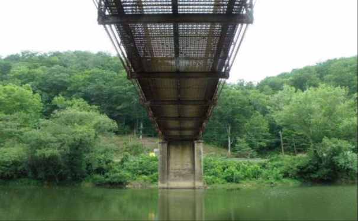

| Section 1: Narrative Report |
|---|
| Procedure |
Information for this inspection report was obtained June 29, 30, July 3, 5, 6, 12, 18, 2021 The inspector in charge was R. Johnson assisted by: Irene Song on June 29, 30, July 3, 5, 6, 12, 18, Jane Smith on June 29, July 3, 5, 6, 12, 16, 18, 24, 25, Anders Carter on June 29, July 3, 5, 6, 13 Florence Moore on June 30, and Stella Clark on July 18. The level of inspection forming the basis for this report was a general visual observation, beginning with the substructure units at the ground and waterlines, ending with the upper chords of Span Two. The underside was observed from the ground and by use of ladders and a swinging scaffold, providing all areas hands-on inspection. Orientation of the structural units is in compliance with the plans and straight-line survey. A Periodic Inspection, made June 12, 2019, by L. Nelson, rated the general overall condition of the structure poor. |
| Summary & Recommendations |
The structure, in general, is in poor condition. The most serious deficiencies observed, along with our recommendations, are as follows: 1. Various truss members, floor system members, truss connections, and laterals exhibit section loss which should be repaired. 2. The fractured lower chord pin nuts in Spans One and Three should be repaired or replaced. 3. Damaged and loose sections of the two-line guardrail should be repaired. 4. Stringer Two at Abutment Two should be raised and the expansion seal at this location replaced. 5. Span One's Downstream Truss should be monitored during each future inspection. 6. Replacement of the frozen roller nests over Pier One and any deteriorated bearing plates is recommended. 7. The cracked and spalled areas of the substructure units should be repaired. 8. All loose truss members should be tightened and the entire structure cleaned and painted. 9. Despite, effective retrofits and maintenance over the years. The structure is fracture critical and in a general state of decline. The structure has been in service for 85 years and soon will be requiring extensive repairs to items that were previously retrofitted; we recommend prompt replacement of the structure. A WORK ORDER DATED 8/2/2012 WAS SUBMITTED FOLLOWING THIS INSPECTION. |
|
| Engineers Comments |
Inspection Frequency has been reduced from 24 months to 12 months due to low ratings. This structure is programmed to be replaced with construction currently scheduled to start in January 2022. Due to the deteriorated condition of the floor system, we recommend reducing the Gross Load Posting from the current 13 Tons to 7 Tons. |
| Traffic Conditions |
The structure is posted for 13 tons in accordance with a Commissioner's Order dated December 24, 1987, currently on file. The posting, to the best of our knowledge, is being obeyed. The intersection with WV 4 at Abutment Two occasionally causes traffic to back up on the structure. The structure's narrow width (15'-9") restricts traffic flow to one direction at a time. |
| Waterway - Feature Intersected |
Divers from Materials Control Soil and Testing have removed this structure from their inspection schedule due to the low water conditions usually found. The water was shallow and clear at each substructure during our inspection; we found no scour or undercutting around the piers. We did, however, find a moderate amount of debris accumulated at the upstream end of Pier Two, the only substructure in the water during our inspection. The stream aligns well with the structure and the channel appears capable of handling periods of high water. No high water marks were visible during our inspection. Previous reports have noted minor scour at both piers; with no significant changes over the years. A Scour Evaluation Summary (DS-34) dated June 24, 2019, lists the structure as having scoured potential and in the low-risk category with a recommended code 8. The bridge will be inspected for scouring problems during routine inspections and after any flow event producing water surface elevations greater than Q10 discharge. No substructure plans exist. Soundings were taken along the structures upstream side referenced to the centerline of the lower chord pins at panel point intervals with a 19.8' maximum water depth located near the mid-span of Span Two. Our soundings were plotted in comparison to the initial Inventory Report. However, we found no significant change since last plotted in 2018. |
| Environmental Conditons |
The structure is subjected to deicing agents. |
| Section 2: Bridge Elements |
|---|
| Superstructure BEARINGS NBE Steel / Rating: 1 |
| The various bearing devices are in poor condition. We found the bearings of Stringer Two at Abutment Two below grade and not supporting the grid deck properly. We believe this condition is due to Stringer Two being plated after partial failure. A work order was submitted to correct his situation. All of the bearings on the entire structure are corroded and show no indications of movement during expansion and contraction (see Photo 13). The bearing shoes of Span Two (Main Span) are heavily rusted over Pier Two and the roller nests over Pier One are corroded and frozen. We found both the upstream and downstream trusses at Abutment One in contact with the back wall and the anchor bolts of the downstream truss failed at this location. It is further noted that the bearings are in the fully expanded position at Pier One end of Span One and the expansion end of Spans Two and Three. We also found the stringers over the piers appearing to be floating slightly above their respective masonry plates, suspended from the grid deck. However, we did not observe any excessive movement under load. Previous reports have stated that this gap was 1/8” to 5/16”. It appears that the failure and subsequent repairs of the grid decking at each pier have actually helped this situation, allowing the stringers to settle on to the bearing plates, somewhat, as the gap is now about 1/16” (see Photo 14). Previous reports have indicated that a possible problem was created during the renovation work performed in 1978 by bolting the stringer ends to Abutment One, thereby preventing normal expansion and contraction. We agree that both ends of Spans One were originally expansion. However, with the stringers attached to each floor beam and the trusses now against the backwall, it is no longer an issue. |
|
| Superstructure GIRDER NBE PSC / Rating: 8 |
| Good condition. |
| There is no image. |
| Substructure FLOORBEAMS NBE PSC / Rating: 3 |
| The floor beams are in fair condition. All of the fracture critical floor beams on the structure were retrofitted in 1978 with cover pates to the top and bottom flanges and full-length web plates. Although the floor beams now display minor deterioration, primarily to the top flanges directly under each stringer, the members have substantially more section now than when new. The downstream end of Floor Beam Two in Span Two is the exception with moderate deterioration near the interior vertical gusset (see Photo 15) also (refer to Photo 72) . |
 |
| Substructure PIER ONE NBE PSC / Rating: 6 |
| This reinforced concrete square column pier with a web wall is in fair condition. · All surfaces exhibit a weather-worn, aged appearance with small delaminations, hairline cracks, and efflorescence stains. · The columns and connecting web wall exhibit scarring at and around the mean waterline, especially on the forward side. · Column One has an area of delamination with exposed vertical rebar on its rear face (see Photo 71). |
|
| Deck ONE NBE PSC / Rating: 4 |
| The 5 3/16" open steel grid deck is in fair condition and provides full lateral support. However, areas near each substructure are now either failed or have been repaired by removing the grid deck and replacing sections with steel plate running between stringers, covered with either HLBC wearing coarse or some form of other concrete Areas of the grid deck away from the substructures are in good condition with little loss to the bearing bars or other elements (see Photos 62 thru 66). In addition, state forces performed additional deck repairs in areas near PierOne and Pier Two following this inspection. The grid deck surface is smooth and an acceptably smooth ride is provided. The channel beam wheel guards remain in fair condition. We found a section of the wheel guard loose from the grid deck at Pier Two, upstream. Deck drains are not needed in an open grid deck. |
|  |
| Section 3: Additional Elements |
|---|
| Deterioration |
Deterioration Details |
|